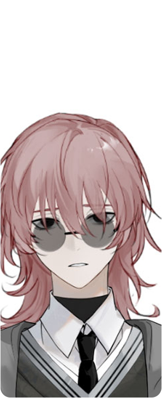
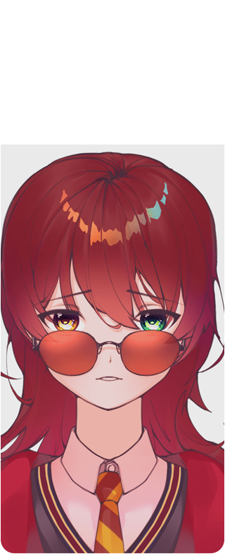
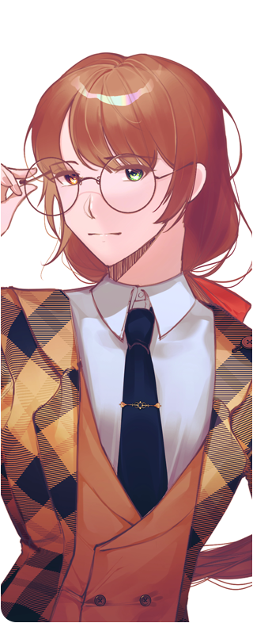
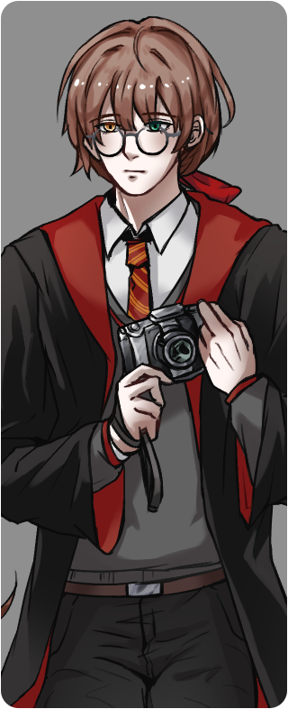
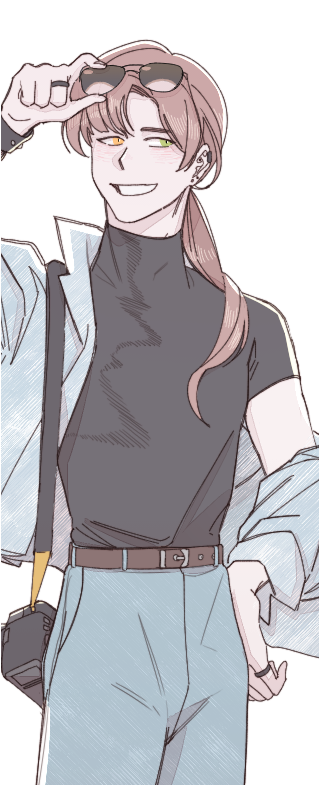
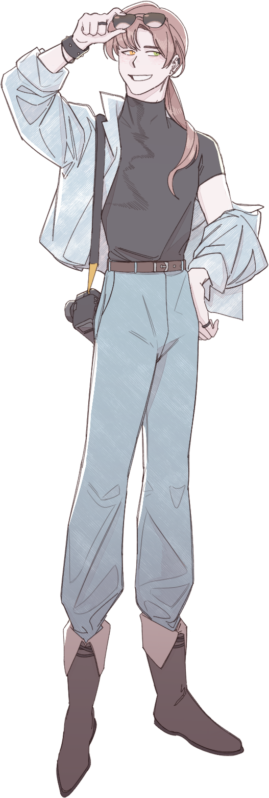

Jerry Rubinstein
제리 루빈스타인





[ 그 아즈카반의 죄수 ]
“ 거 뭐, 저승길 동무도 친구 아닌가? ”
나이
25세
기숙사
그리핀도르
“철회하지 않는 예술관, 차라리 용감하지.”
진영
불사조 기사단
직업
독립 영화 감독
국적
영국인
혈통
혼혈
키/무게
189cm/75kg
성별
시스젠더 남성
지팡이
배나무/유니콘의 털/11인치/휘지 않음
성격
# 행동파
말보다 행동이 앞서기로 유명하다. 지지부진 고민할 시간에 일단 들이받고 생각해도 늦지 않다는 지독한 행동파. 때로 너무 행동이 앞서는 바람에 일을 그르치기도 하지만, 어차피 사람 사는 거 다 그렇지 하면서 망친 것도 스스로 알아서 수습하긴 한다. 물론 ‘과거의 나, 왜 그랬어?’ 하고 투덜거리긴 하지만. 까닭에 시원시원한 구석이 있고 감정 표현도 솔직한 편이라 도리어 웬만한 일에 뒤끝이 없는 편이다. 뒤끝이 생기기에는, 화가 나도 그냥 그 자리에서 솔직하게 들이받아버리니까.
# 시니컬한 친절함
고르자면 ‘개’과라기 보단 ‘고양이’과. 낯을 좀 가리는 기미가 있어서 초면인 사람들과 함께 있으면 조금 주변을 경계하면서 살핀다. 신중해서라기 보다는, 그냥 낯선 것보다 익숙한 사람이 좋긴 하지 않느냐는 일반론. 그밖에도 세상을 바라보는 눈이 살짝 시니컬한 면이 있고, 투정도 많고 자주 불만을 투덜거리기 일쑤다. 그렇지만 사람이 나쁜 건 아니고 (뜻밖에도) 주말이면 성당 나가서 미사 드리는 성당 오빠인지라, 투덜거리면서도 남들한테 오지랖 부려가며 친절을 베푸는 일도 잦다. 소위 길 가다가 노인분들한테 짜증을 부리면서도 무거운 짐은 다 들어주는 ‘성질머리 있는 호구’ 형 인간.
# 탐미주의 예술가
어디 가서 예술을 하게 생겼다는 말을 자주 듣진 않지만, 본질적으로 그는 지독한 탐미파 예술가다. 빛이라는 메타포를 사랑하고, 특히나 영화와 사진 예술에 바치는 열정이 남다르다. 이왕이면 다홍치마라고 아름다운 게 나쁠 건 없다는 것이 그의 지론이다. 예술관도 확고하고 신념도 굳건하다. 이래저래 고집 있던 성격은 어디 달아나지 않은 모양. 물론 본인에게 ‘너 예전이랑 똑같네’ 하면 ‘예전이 언젠데? 뭐야, 댁 나 알아?’ 하겠지만….
기타
● 풀네임은 제럴드 브래들리 루빈스타인, 주로 ‘제리’라는 애칭으로 불린다. 기억이 망가져 있는 통에 본인은 고향을 잊어버렸지만, 요크셔의 셰필드 출신이고 억양에서도 요크셔라는 고향이 느껴진다.
○ 루빈스타인 가문은 폴란드 바르샤바에 본가를 둔 순수혈통 가문으로 어머니 집안의 성씨다. 루빈스타인 가문의 직계 후손이라기 보다는 아직 루빈스타인 성씨를 쓰고 있을 뿐인 방계. 딱히 본가의 재산을 물려받을 일 같은 건 없다.
○ 어머니가 순수 혈통, 아버지가 머글 태생의 마법사여서 혼혈로 분류되었다.
○ 외증조부대부터 그의 직계가 영국으로 이민을 왔기 때문에 폴란드계 영국인이라는 표현을 쓰지 않는다.
○ 부모님이 이혼하신 이래 이모네 맡겨져 자랐다. 넬리 루빈스타인과 안톤 루빈스타인이 사실상 제리의 양육자였고 부모가 제리의 양육에 관여한 바는 거의 없는 수준이다. 이모 댁이 조그마한 영화관을 운영했기 때문에 어려서부터 수많은 영화를 보며 자라났다. 무성 영화부터 최근작까지.
● 어려서부터 장난감 같은 1회용 사진기 등으로 사진을 찍었고, 청소년기에 들어가며 영화 제작에 빠져들었다. 직업을 대라고 하면 독립 영화 감독을 가장 먼저 꼽지만, 여전히 사진 찍는 것도 좋아하고 프리랜서 포토그래퍼로 사진을 찍는 일도 존재한다.
○ 아무래도 프리랜서고 어느 쪽도 고정 수입이 없기 때문에, 고정 수입을 얻기 위해 현재 누아다 녹턴이 운영하는 더블린 탐정 사무소에서 탐정 조수로 서류 업무를 보고 있다. 짧은 시간 근무하고, 모자란 수입은 사진으로 얻고 그렇게 모은 돈으로 영화를 찍는다.
● 아즈카반 복역 전과가 있다. 예언자 일보에 보도된 기사에 따르면 죄목은 존속살인 및 폭력, 자세한 사건 내막은 “자신을 키워준 이모 부부인 넬리 루빈스타인과 안톤 루빈스타인을 살해하고, 친어머니인 아만다 루빈스타인을 마법을 사용하여 공격했다”는 것. 그나마 루빈스타인 본가의 사정으로 감형 요청이 들어가 3년형에 그쳤지, 까딱 잘못했으면 지금까지도 아즈카반에 있을 뻔했다.
재판 기록을 찾아본 이라면 어쩌면 당시 제리 루빈스타인이 정말로 이모 부부를 살해하지 않았을 수도 있다는 의혹 혹은 확신을 가졌을 수도 있다. (실제로도 누명이다.)
현 시점, 그는 아즈카반에서 디멘터에게 3년을 시달린 나머지 이상이 왔다. 그 이상 작용, 어쩌면 광증이 과거의 기억을 모두 날려버리는 형태로 온 것은, 아마 우연이겠으나. 그러나 덕분에 아즈카반 복역을 마치고 출소한 죄수치고는 곱게 미쳤다는 평가를 듣는다. 심하면 대화도 불가능할 정도로 망가지는 것이 아즈카반 수감 생활인데, 제리는 멀쩡한 편이었다. 기초 상식을 제외한 기억 전반이 날아간 통에 출소 직후 “나는 누구, 여긴 어디?” 상태이긴 했어도. 지금도 멀쩡히 대화가 가능하고 사고할 수 있으며, 딱히 미쳤다는 티가 나지도 않는다. 어쩌면 그 어느 때보다 정서적으로 안정적일지도 모를 일이다.
● 제리 루빈스타인이 스무 살 되던 해, 요크셔에서 벌어진 살인 사건으로 늦은 밤 제리 루빈스타인이 자리를 비운 사이 루빈스타인 부부가 아만다 루빈스타인에 의하여 살해당한 사건이다. 이는 아만다라는 개인이 저지른 혐오 범죄로, 자신의 행복을 모두 훔쳐간 자신의 언니와 머글본 형부에 대한 까닭 없는 증오로 벌인 일. 그녀는 그 자리에서 제리를 대면하자마자 마찬가지로 자신의 삶 전반을 망가뜨렸다고 믿고 있는 그 머글 남자의 아들을 제거함으로써 순수혈통이자 약속된 행복을 누려야 했던 자신의 억울함을 해소하고 우위를 증명하고자 했다. 그러나 장성한 아들인 제리가 순순히 밀리지 않았던 까닭에 전투가 길어졌고, 그 전투 도중에 현장 출동한 오러가 도착해 두 모자가 같은 자리에서 체포되었다.
재판 자체는 다소 엉망으로 돌아갔다. 당시 루빈스타인 부부 살인 사건 현장에서 현장 체포된 사람은 두 사람. 제리 루빈스타인과 아만다 루빈스타인. 두 사람 사이에서도 마법을 사용한 전투가 있었고, 루빈스타인 부부는 두 사람이 전투하던 시점에 이미 사망한 상태로 부검 결과 밝혀졌다. 제리에게 유리한 증거는 모두 채택되지 않았고, 판결문에도 가장 큰 근거로 작용한 것은 아만다 루빈스타인은 순수혈통인 것에 반해 제리 루빈스타인은 혼혈이기 때문에 인격적 하자가 있을 것이라는 혈통에 근거한 차별 논리. 이에 관하여 제리 루빈스타인은 단 한 마디도 반박하지 않았고, 최종 변론에서조차 꼿꼿하게 위즌가모트 의장을 쳐다보며 다음과 같은 말을 남긴 것으로 유명하다.
“제가 단 하나 후회하는 것이 있다면, 아만다 루빈스타인을 일찍이 살해하지 못했다는 사실만을 후회합니다.”
물론, 해당 발언이 제리의 판결에 불리하게 작용했음은 말할 것도 없다. 결국 그는 아만다 루빈스타인을 공격한 폭력 전과, 더불어 루빈스타인 부부를 살해한 살인까지 혼자 뒤집어 쓰고 아즈카반 형에 처해졌다.
● 출소 직후 제일 먼저 쳐들어간 곳은 마법부. 행정 부서에 쳐들어가서 책상부터 대뜸 걷어차고 본인의 인적 정보를 내놓으라고 협박한 일화로 유명하다. “아니, 빌어먹을, 니들이 사람을 아즈카반에 쳐넣어서 자기 이름도 모르는 바보로 만들어 놨으면 책임을 져야 할 것 아니야!” 하면서. 다행히 호그와트 시절에 제리와 오며 가며 얼굴을 알았던 선배가 오러국에 근무하고 있었고, 지나가다 제리를 발견한 덕분에 이름부터 시작하여 자신의 인적 정보를 확인할 수 있었다.
● 해당 선배(라이언 가드너)가 제리의 사정을 딱하게 생각한 까닭에-그는 제리가 살인사건의 진범이 아니라고 추측한다.- 일자리를 알아봐주었다. 선배의 친척이 더블린에서 운영하고 있는 마법사들의 탐정 사무소에서 사무 보조 및 현장에서 증거품 기록을 사진으로 찍어서 자료를 관리해줄 아르바이트생을 모집하고 있다는 것. “후배님 사진 찍는 거 좋아했잖아요?” 라는 이유로 일자리를 추천했는데, 막상 제리는 “아니, 젠장, 내가 과거에 뭘 좋아했는지 알까 보냐”는 반응이었다고….
● 독립 영화를 한 편 정도 작은 영화제에 선보였다. 영국 마법사 사회 쪽에서 열리는 영화제로, 아무래도 전과가 붙은 이름을 걸기 어려워서 ‘러셀 슐랜스키’라는 예명을 사용했다. 개봉했던 작품의 제목은 <피에타>로, 순수혈통 사회 속에 도사리는 차별과 모순을 다루는, 다소 사회적인 내용이어서 당시 영화제에서 딱히 좋은 평가를 받진 않았지만 일부 영화 팬들 사이에선 조명을 이용한 미장센이 아름답다거나, 영화 자체는 잘 만들었는데 시대를 잘못 타고났다는 평가가 많았다.
● 거의 본능적으로 순수혈통우월주의라면 학을 뗀다. 애초에 비논리적일 뿐더러, 사실 무의식 중에 어머니 아만다 루빈스타인의 태도에 배어 있던 혈통우월주의에 관한 반항심이 박혀 있어서 그런 것도 있고. 대체로 순혈이 우월하다고 주장하는 놈들을 ‘바보 멍청이’ 정도로 취급한다. 애잔하게 쳐다보는 듯하다. (마치 학창시절의 제리 루빈스타인처럼.)
● 전쟁에 참여한 이유는, 의외로 전장에서 친구들의 이름이 발견된다는 소식을 오러국에서 근무하는 저 선배로부터 전해들었기 때문에. 소식을 들은 제리는 무의식적으로 ‘거 누군진 하나하나 기억 안 나지만 대충 나랑 얼굴들은 아는 사이였겠지? 염병, 그냥 집에나 있지 다들 거기서 뭐 한대?’ 하는 괴상한 오지랖에 이끌려서 전쟁에 참전했다. 기억은 사라져도 사랑은 영혼에 남는가? 제리도 모를 일이지만, 결국 ‘영문 모를 이끌림과 걱정과 우려’ 때문에 카메라 하나 덜렁 들고 전쟁을 기록하러 온 셈이다.
● 흡연도 하고 술도 좋아한다. 근래엔 아일랜드 흑맥주에 꽂혀 있는 편이고, 흡연도 생각보다 헤비 스모커.
● 아즈카반 출소 당시 상당히 깡말라선 쇠약했던 상태였고, 현재도 몸은 꾸준히 회복 중이다. 검진도 정해진 기간에 한 번씩 받고, 밥도 열심히 먹고. 아무래도 그냥 감옥도 아니고 디멘터가 상주하는 아즈카반이었다 보니.
